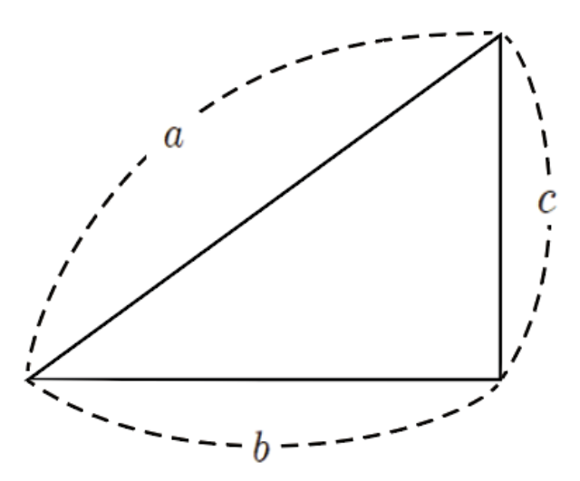

 삼각형의 세 변의 길이를 작은 순서대로 a, b, c로 나열하면 c의 길이는 삼각형의 빗변의 길이와 같다. 이 때 a^2 + b^2 = c^2의 성질이 성립된다. 세 변의 길이가 자연수이면서 피타고라스의 정리를 만족하는 쌍으로는 여러가지가 있다. 가장 자주 사용되는 쌍은 3,4,5 그리고 5,12,13이 있다. 삼각형의 길이의 비가 일정하면 닮음이므로 아래 자연수에 같은 수만큼 곱해져 있다면 그 도형도 직각삼각형이다.